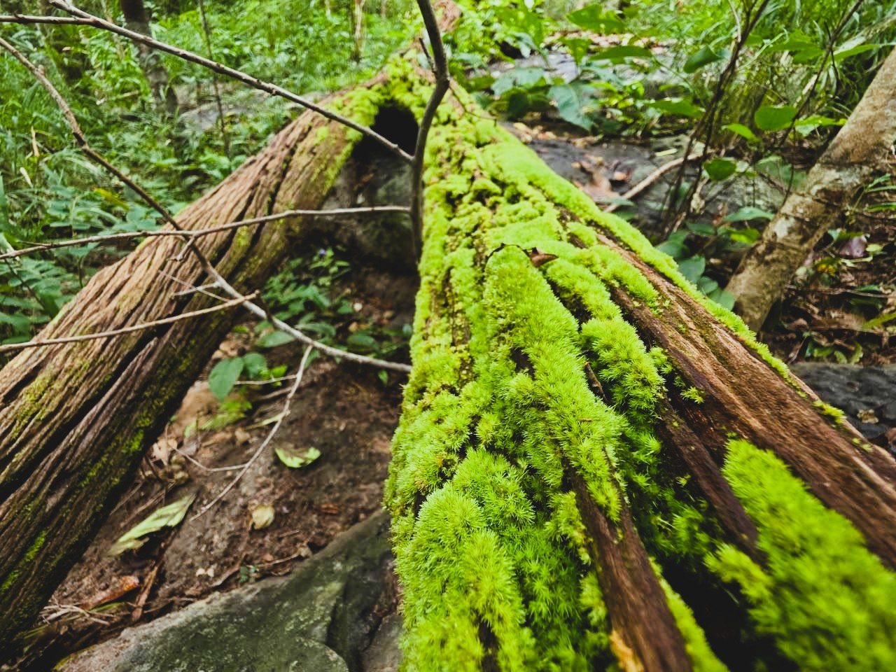
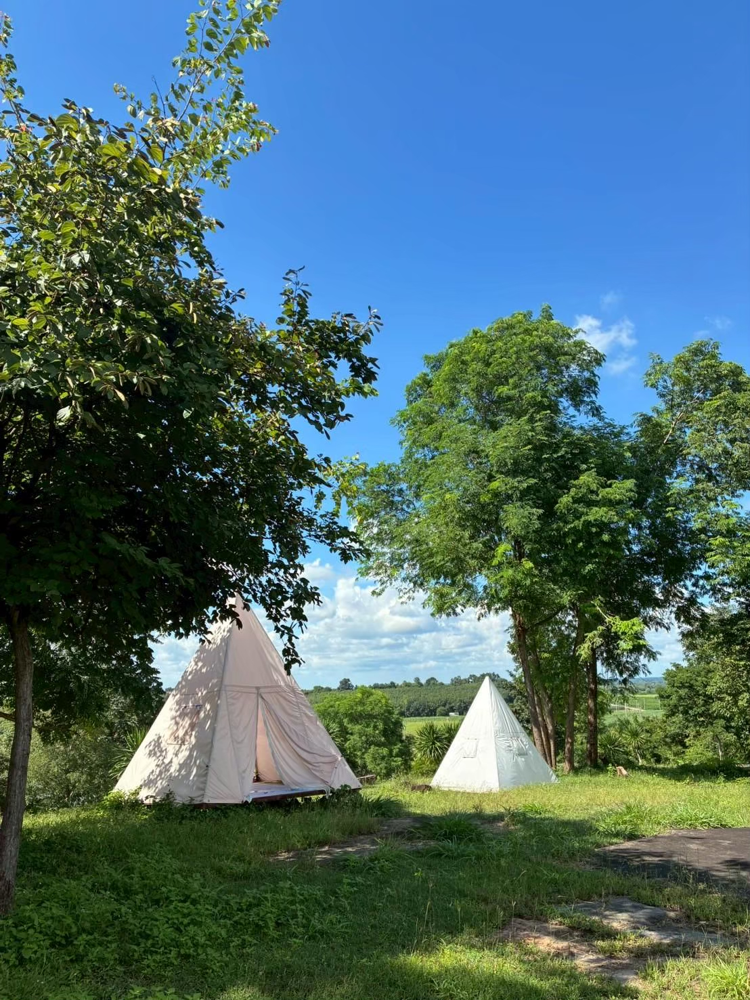
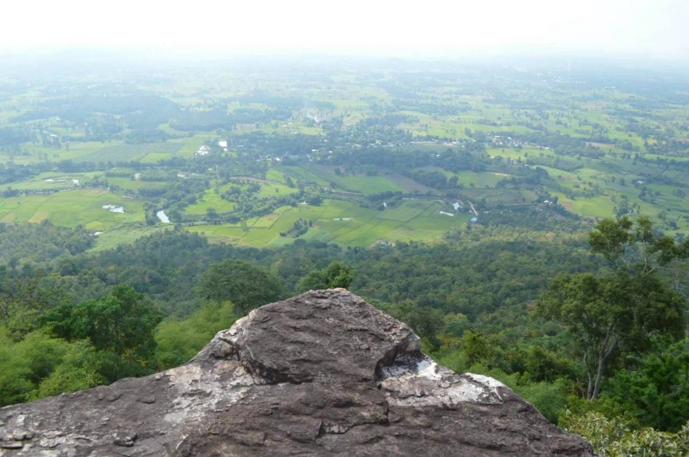
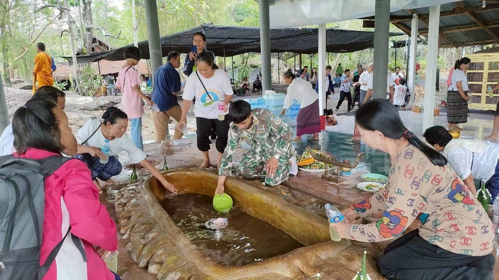
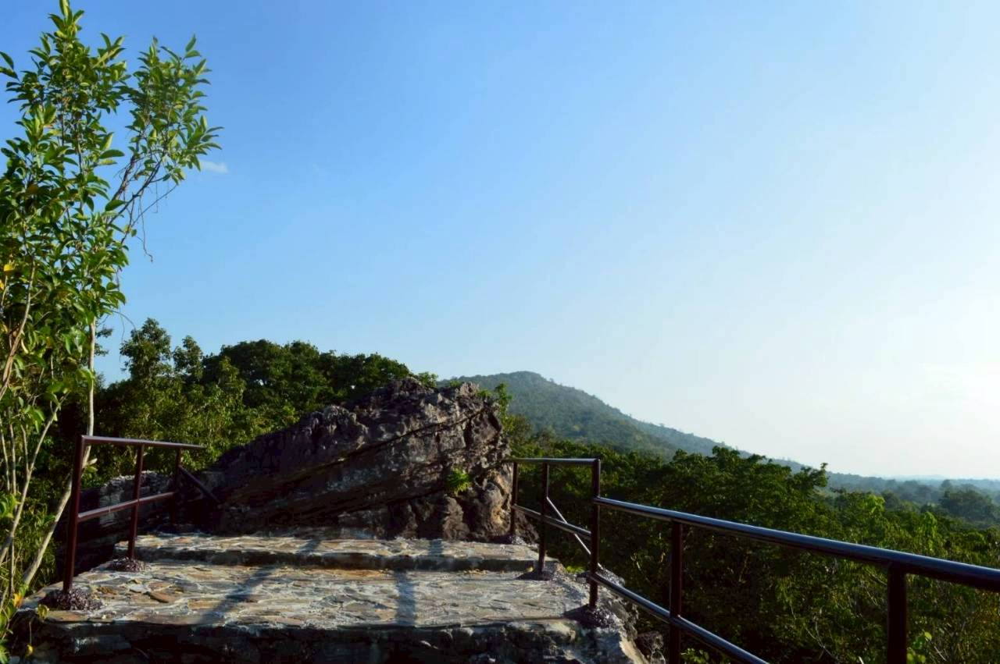
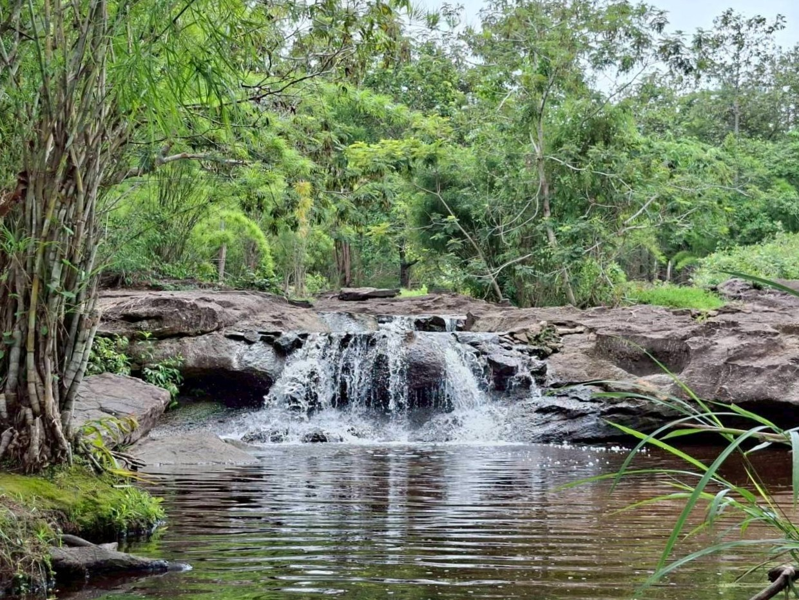
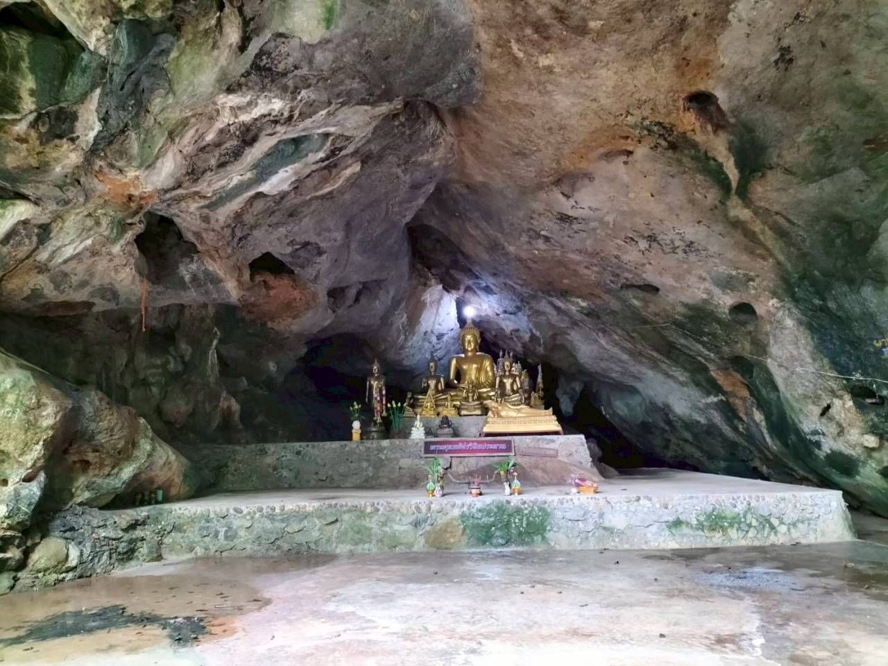
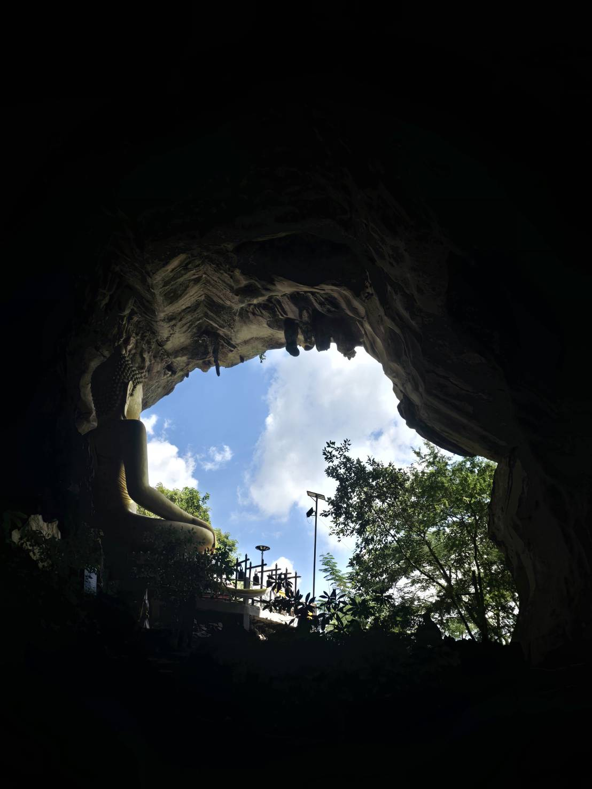

สถานที่ท่องเที่ยว · ภธ.1
ภูหินจอมธาตุ
เส้นทางศึกษาธรรมชาติบนยอดเขา สำรวจลานหินและเพิงผาหินทรายรูปทรงแปลกตาจากธรรมชาติ สัมผัสทัศนียภาพที่งดงามและเรียนรู้ความหลากหลายของระบบนิเวศป่าเต็งรัง
เปิดแผนที่ Google Mapsออกสำรวจภูมิประเทศ ลานหิน หน้าผา ถ้ำ และแหล่งธรรมชาติที่น่าสนใจในพื้นที่อุทยานแห่งชาติภูหินจอมธาตุ–ภูพระบาท

เรื่องราวของธรรมชาติ รอให้เราออกไปค้นพบ
สำรวจภูมิประเทศและจุดเด่นของภูหินจอมธาตุ ↗ เปิดแผนที่ Google Maps
สถานที่ท่องเที่ยว · ภธ.1
เส้นทางศึกษาธรรมชาติบนยอดเขา สำรวจลานหินและเพิงผาหินทรายรูปทรงแปลกตาจากธรรมชาติ สัมผัสทัศนียภาพที่งดงามและเรียนรู้ความหลากหลายของระบบนิเวศป่าเต็งรัง
เปิดแผนที่ Google Maps
สถานที่ท่องเที่ยว · ภธ.1
จุดกางเต็นท์พักแรมท่ามกลางแนวป่าและลานหินธรรมชาติ บรรยากาศเงียบสงบ เหมาะสำหรับการพักผ่อน ดูดาว และสัมผัสอากาศบริสุทธิ์
เปิดแผนที่ Google Mapsหน้าผา ลานหิน และร่องรอยทางธรรมชาติที่น่าสำรวจ ↗ เปิดแผนที่ Google Maps

สถานที่ท่องเที่ยว · ภธ.2
จุดชมวิวบนยอดเขาสูง มองเห็นทัศนียภาพของผืนป่าและแนวเทือกเขาได้กว้างไกล เหมาะสำหรับการชมวิวธรรมชาติและรับลมเย็นบนหน้าผา
เปิดแผนที่ Google Maps
สถานที่ท่องเที่ยว · ภธ.2
แหล่งโบราณคดีและปูชนียสถานสำคัญบนลานหินธรรมชาติ สะท้อนเรื่องราวศรัทธาและความผูกพันทางวัฒนธรรมของชุมชนกับผืนป่า
เปิดแผนที่ Google Maps
สถานที่ท่องเที่ยว · ภธ.2
จุดชมวิวขนาดเล็กที่ไม่สูงมาก เดินสะดวกด้วยบันไดตลอดเส้นทาง เหมาะสำหรับการเดินพักผ่อนสบาย ๆ และชมทัศนียภาพป่าไม้รอบด้าน
เปิดแผนที่ Google Mapsพื้นที่ธรรมชาติสำหรับสำรวจและเรียนรู้ระบบนิเวศป่า ↗ เปิดแผนที่ Google Maps

สถานที่ท่องเที่ยว · ภธ.3
น้ำตกหินทรายขนาดเล็กชั้นเดียว สายน้ำไหลผ่านเพิงผาลงสู่แอ่งน้ำ บรรยากาศร่มรื่นเงียบสงบ เหมาะแก่การแวะพักคลายร้อนริมลำธาร
เปิดแผนที่ Google Mapsถ้ำ ภูเขา และภูมิประเทศที่มีเอกลักษณ์

สถานที่ท่องเที่ยว · จุดสกัด
ถ้ำธรรมชาติใต้เพิงผาหินทราย โดยมีทางขึ้นผ่านวัดถ้ำผาเวียง บรรยากาศเงียบสงบ ร่มรื่น และผสมผสานความสงบทางธรรมเข้ากับความงดงามของผืนป่า
เปิดแผนที่ Google Maps
สถานที่ท่องเที่ยว · จุดสกัด
ถ้ำหินปูนขนาดใหญ่ที่มีหินงอกหินย้อยงดงาม ทางขึ้นตั้งอยู่บริเวณวัดถ้ำเอราวัณ มีบันไดเดินขึ้นสู่ปากถ้ำเพื่อสักการะพระพุทธรูปและชมวิวทิวทัศน์
เปิดแผนที่ Google Mapsวางแผนการเดินทางและศึกษาข้อมูลเส้นทางก่อนออกสำรวจพื้นที่ทุกครั้ง
ดูเส้นทางเดินป่า ↗